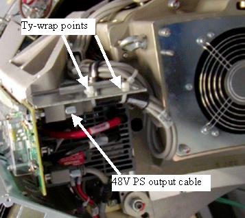

NOTE:
With the 2006 Style plenum, the 48V cable routing allows easy plenum removal without needing to remove the 48V cable. Only remove cable if you think it is necessary.
Illustration 1:
48V Power Supply Cable
